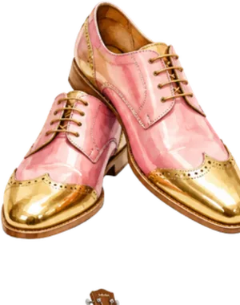
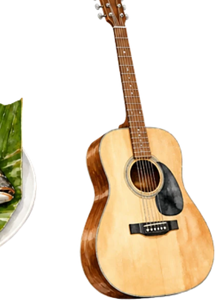
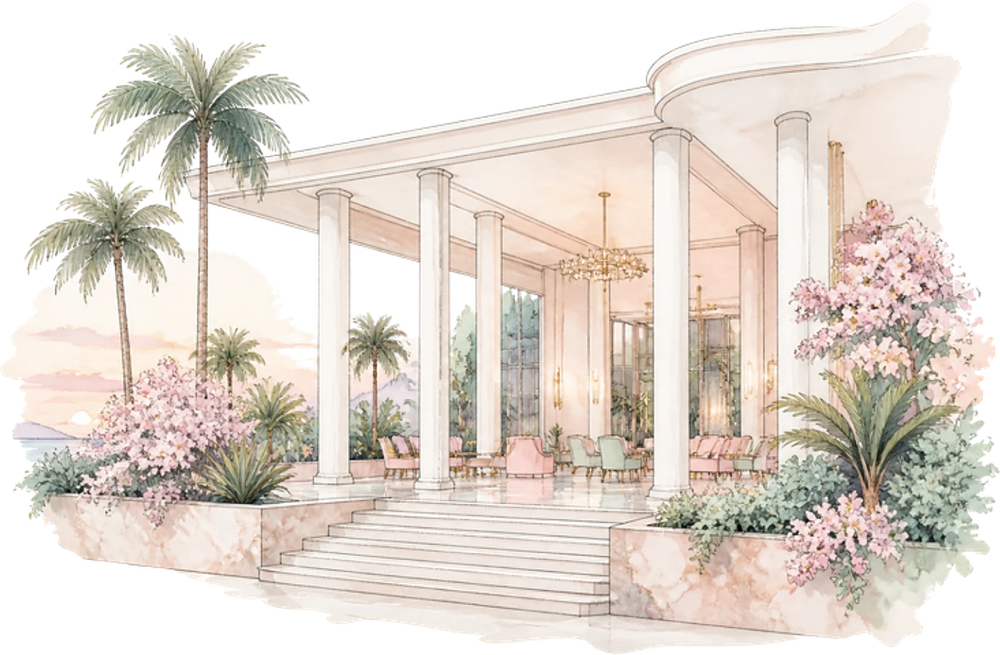
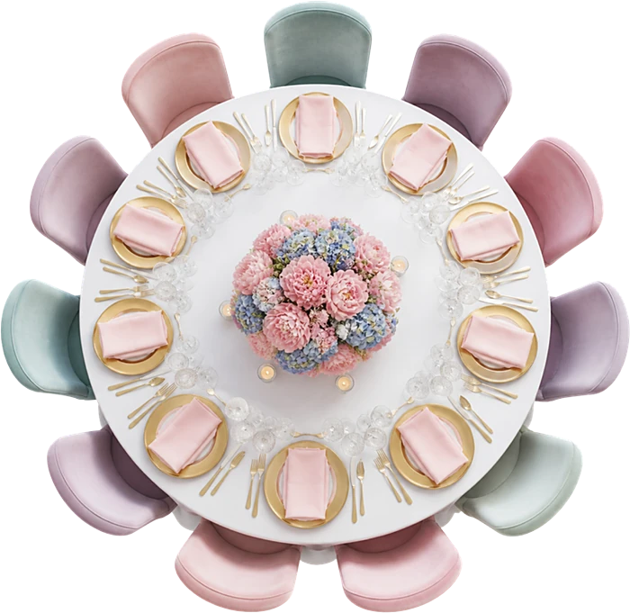
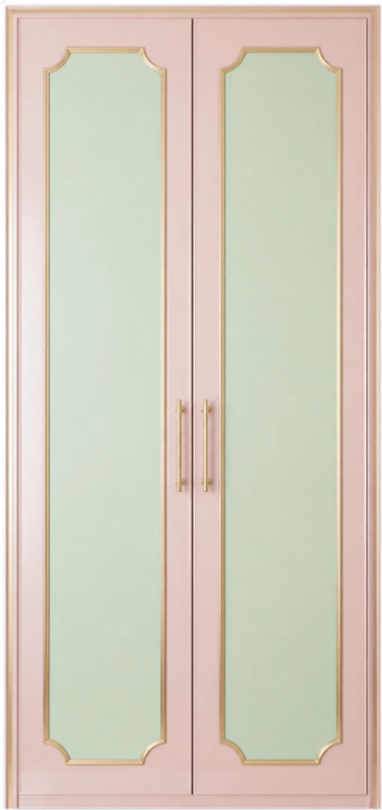

Ils se sont rencontrés à un défilé de sapeurs, boulevard du 30 Juin : lui en costume rose poudré, elle qui a ri de son chapeau.
Grâce & Dieudonné
Le programme
Samedi 18 septembre 2027
- 15 h 00Accueil et défilé des familles

16 h 00Échange des alliances- 17 h 00Champagne et cocktail
- 19 h 00Dîner : poisson braisé et liboke

21 h 00Rumba et ndombolo- 23 h 30Gâteau des mariés


Le lieu
Salle Mont-Fleury
Gombe, Kinshasa
Tenue
Sape pastel
Costumes et robes aux tons pastel : rose poudré, menthe, lilas. Nœuds papillon, chapeaux et cannes vivement encouragés.

Il reste
--jours
--heures
--minutes
Votre réponse
Merci de répondre avant le 15 août 2027.
Je serai présent·eJe ne pourrai pas venir